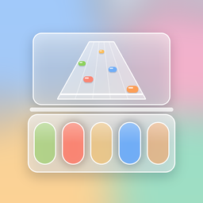

Band Duo
Play piano, guitar and drums. The notes fly across your table.
Contact support
Questions, bugs or ideas? Send a support request. Include your iPhone model, iOS version, and the song and instrument if something isn't working. We reply within two business days.
How to play
- The two screens
- The top half shows the note highway. The bottom half is your instrument. On iPhone Duo, half-fold it like a laptop. On other iPhones the screen splits in two.
- Piano
- Tap the key in the lane where each note lands on the strike line. Harder songs add more keys.
- Guitar
- Hold the colored fret buttons with one hand and strum on the guitar body with the other as the note crosses the line. You can turn off strumming in Settings to play with taps only.
- Drums
- Tap the drums and cymbals as notes arrive. The wide orange bar is the kick pedal.
- Streaks and Encore
- Hit notes in a row to raise your multiplier. Build up energy, then tap the Encore button for double points. If the crowd meter runs out, the song fails, unless No fail is on in Settings.
Play in your room (camera)
With Play in your room on, the stage sits on the table in front of you using the camera. The camera is used only on your iPhone to place the stage. Nothing is recorded or uploaded. If you'd rather not use the camera, turn off Play in your room in Settings to play in the virtual room.
Timing feels off?
Bluetooth headphones add delay. Open Settings, tap Calibrate audio, and tap along with the beat. Band Duo adjusts its timing to match.
Game Center
Leaderboards and achievements use your Game Center account (Settings > Game Center on your iPhone). Each song has its own leaderboard, plus career totals for each instrument.